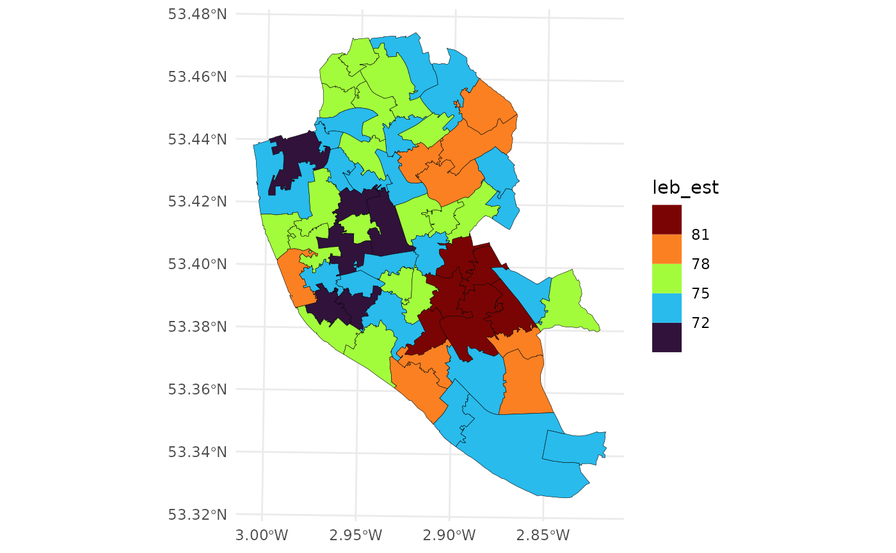
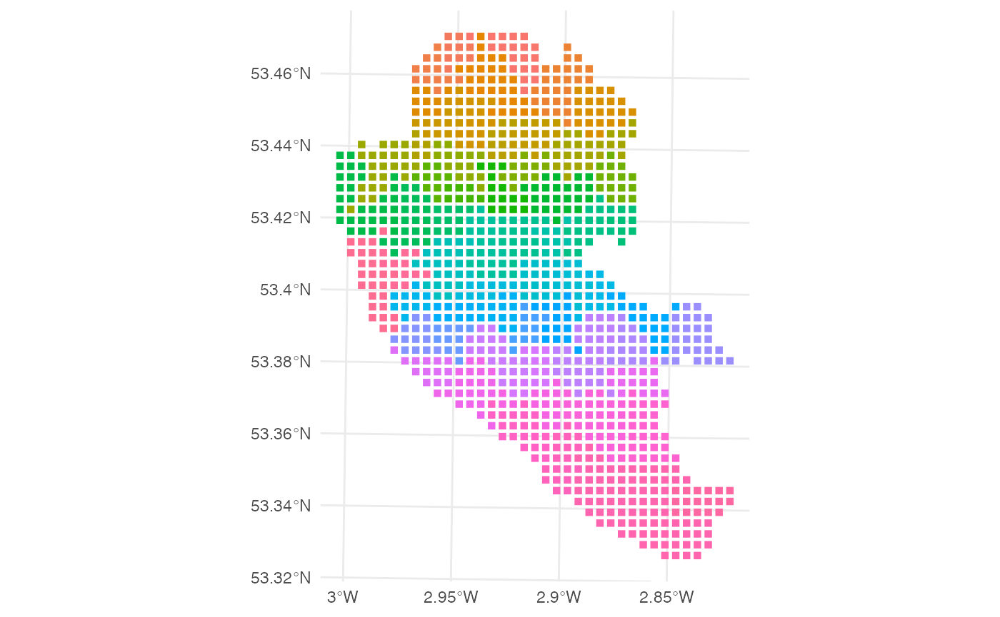

The purpose of this vignette is to illustrate how to convert sf(Pebesma 2018) objects to objects support by the spmismo package. Besides the sf and spmismo packages, the ggplot2(Wickham 2011) package will be used for the data visualizations.
The data used here are the datasets provided by Johnson, Diggle, and Giorgi (2020) about the Life Expectancy at Birth and Index of Multiple Deprivation. These two variables were observed into different paritions of Liverpool, the LSOA and MSOA1, respectively.
The methods developed in this package are heavily based on the theory developed in Johnson, Diggle, and Giorgi (2020). The main assumption is that continuous random variables observed in polygons (like administrative regios) are composed by the average of an stationary and isotropic underlying Gaussian Random Field (Rue and Held 2005) plus a Gaussian “Residual”. In practice, there exists an identifiability when estimating some variance parameters, which can be seen either as small scale variation (nugget effect) or measurement errors.
To illustrate how this work, consider the case on which we do observe a random variable in a partition of a study region. In our example, this random variable is the estimated LEB2 in Liverpool observed in the MSOA’s. We can load and visualize the data by using the command below.
data(liv_msoa)
## workaround for compatibility with different PROJ versions
st_crs(liv_msoa) <-
st_crs(liv_msoa)$input
ggplot(data = liv_msoa,
aes(fill = leb_est)) +
geom_sf(color = "black",
lwd = .1) +
scale_fill_viridis_b() +
theme_minimal()
We consider, in a first moment, that this random variable is normally distributed with a constant mean and a certain (spatial) covariance matrix. Now, let \(A_1\) and \(A_2\) be two distinct MSOA’s. Under the before mentioned assumption that the observed random variable is driven by an underlying gaussian random field with isotropic covariance function \(C(\lVert x - y \rVert \, ; \, \theta)\), where \(\lVert x - y \rVert\) is the distance between two points in the coordinates \(x\) and \(y\), respectively. Then, the covariance between the (averaged) variable observed at \(A_1\) and \(A_2\) is define as \[ \Sigma_{12} = Cov(A_1, A_2) = \frac{1}{\lvert A_1 \rvert \lvert A_2 \rvert} \int_{A_1} \int_{A_2} C(\lVert x - y \rVert; \theta) \, dy \, dx. \] In order to approximate the continuous surface on which these covariances have to be computed, we generate a fine grid over the whole study region (or a fine grid within each MSOA) and approximate such covariance by numerical integration.
This is were we use the sf_to_spm function. This functions is enhanced by the st_sample function from the sf package. This function allows us to input either a single sf (POLYGON) object or two sf objects. The former only makes sense if the two sf objects form different partitions of the same region.
Firstly, we are going to show how does it work with a single sf object. Besides the sf objects, this function has 5 additional arguments. The first one, called n_pts, controls the number of points we are going to generate to create a grid within the study region. We can input either a single (integer) value or a vector with length equal to the number of rows of the sf objected being analyzed. The next parameter is called type. This one is string scalar that assumes either "random", "regular", or "hexagonal". Finally, the parameter by_polygon is a logical that if set to TRUE, will generate n_pts for each polygon within the study region3. The last two parameters are poly_ids and var_ids. Both are strings, the first one is a scalar representing the variable that uniquely identify each polygon within the study region, while the second one indicates which (numerical) variables we want to analyze. For example, in the code chunk below, we are transforming the sf object liv_msoa into a spmismo compatible object. We are going to generate a grid of 1000 points within the study region, with type = "regular", and by_polygon = FALSE. The id variable is called "msoa11cd" and the numerical variable that we are interested in is called "leb_est". The object returned by the function is of class "sspm"4. Under the hood, this object is a 5 positions named list. The first position is called "var" and stores the numerical variable (or variables) to be analyzed. The second position is named "dists" and stores the pairwise distances between points belonging to different polygons, this object is important to calculate the covariance matrix associated with the polygons. The third positions stores the name of the id variable, while the fourth and fifth positions contain the grid of points generated and the polygon associated with the data. All these objects are used in functions that will be explained further in other vignettes.
The code of chunk below displays the generated grid coloring each point belonging to this grid accordign to the polygon they “belong to”.
msoa_spm <-
sf_to_spm(sf_obj1 = liv_msoa, n_pts = 1000,
type = "regular", by_polygon = FALSE,
poly_ids = "msoa11cd", var_ids = "leb_est")
ggplot(data = msoa_spm$grid,
aes(color = msoa11cd)) +
geom_sf(pch = 15) +
guides(color = FALSE) +
theme_minimal()
Next, we illustrate how do different values of type and by_polygon affect the final result of the sf_to_spm call. In all examples we are going to use a grid of 305 points (multiple of the number of polygons observed). The “sparsity” of the points forming the grid helps to see the differences caused by the different inputs for the function. The panel below displays every possible combination of the parameters type and by_polygon. Although there is no “right” choice for these parameters, we advise using type as "regular" or "hexagonal" with by by_polygon = FALSE. Also, it is import to make sure that, after generating the grid, your grid is in a finer resolution than your smallest polygon, that is, to make sure that there exists no points lying in more than one polygon. 
Lastly, we show two additional examples of usage of the sf_to_spm function. The first one, using the IMD data at the LSOA level, we show how to proceed when analysing more than one random variable. In the code chunk below, we load the data and convert it to an spmismo compatible object using a regular grid of 1500 points. We also inform the software that we are interested in analyzing two variables within this dataset, the variables "imdscore" and "male", respectively5.
data(liv_lsoa)
st_crs(liv_lsoa) <-
st_crs(liv_lsoa)$input
msoa_spm <-
sf_to_spm(sf_obj1 = liv_lsoa, n_pts = 1500,
type = "regular", by_polygon = FALSE,
poly_ids = "lsoa11cd",
var_ids = c("imdscore", "male"))Finally, to code chunk below displays the situation on which we input two sf objects, representing two partitions of the same space, to the sf_to_spm function. There are some key changes in here, parameters that were scalars before, now turn into vectors or lists. For instance, n_pts now is a list such that its first position is about the sf_obj1 and its second position stores information about the grid of points to be generated for sf_obj2. Yes, we can generate two different grids in here. This is useful especially when the two datasets analysed are in very different scales, allowing us to use a more sparse grid for the dataset with “smaller” resolution. This brings computational improvements because we end up dealing with covariance matrices of lower dimensions. Please, refer to the documentation of the function for further details.
mult_spm <-
sf_to_spm(sf_obj1 = liv_msoa, sf_obj2 = liv_lsoa,
n_pts = list(750, 1500),
type = "regular", by_polygon = FALSE,
poly_ids = c("msoa11cd", "lsoa11cd"),
var_ids = list("leb_est", "imdscore"))References
Johnson, Olatunji, Peter Diggle, and Emanuele Giorgi. 2020. “Dealing with Spatial Misalignment to Model the Relationship Between Deprivation and Life Expectancy: A Model-Based Geostatistical Approach.” International Journal of Health Geographics 19 (1): 1–13.
Pebesma, Edzer. 2018. “Simple Features for R: Standardized Support for Spatial Vector Data.” The R Journal 10 (1): 439–46. https://doi.org/10.32614/RJ-2018-009.
Rue, Havard, and Leonhard Held. 2005. “Gaussian Markov Random Fields: Theory and Applications.” In, 32–42. CRC press.
Wickham, Hadley. 2011. “Ggplot2.” Wiley Interdisciplinary Reviews: Computational Statistics 3 (2): 180–85.